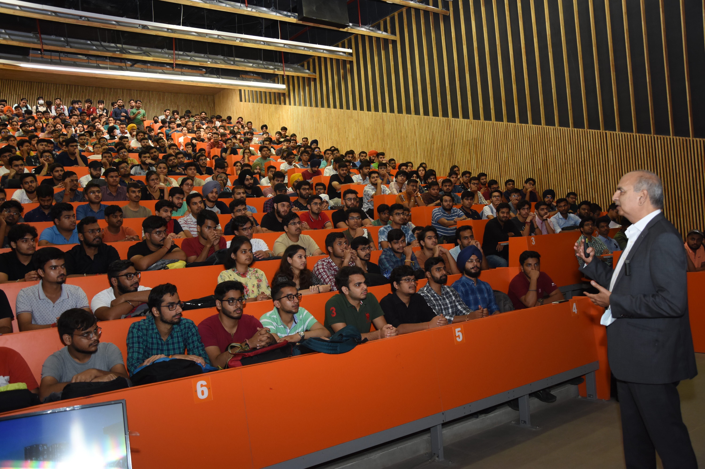

- We’re on your favourite socials!


Thapar University Expert's Review and Verdict
Thapar University, now renamed Thapar Institute of Engineering and Technology, is NAAC A+ grade Deemed to be University. Thapar University was established in the year 1956 and is amongst the oldest universities in India. The campus size of this university is 250 acre. It offers various courses such as B.E, B.Tech, BE+MBA, M.E, M.Tech, M.Sc, MA, MBA, MCA, and PhD. The university has secured a spot in the prestigious NIRF Ranking 2023 in various categories. It was ranked 40th in the overall category, 20th in the engineering category and 22nd in the university category. Apart from this ranking, the university has also managed to garner a stellar reputation internationally as it has been ranked in “601-800” band, worldwide in the Times Higher Education World University Ranking 2023. It has also been accredited by NBA. The engineering programmes have also received the ABET accreditation.
The average package offered to the students in the year 2022 was Rs.11.93 LPA while the highest is Rs. 55.45 LPA. Some of the top recruiters from Thapar University are J.P. Morgan, ICICI Bank, CISCO, Deloitte, Amazon, HSBC, Tata Motors etc.
These facts do not make it as perfect as it sounds. There are also prominent challenges that the university grapples with. The increasing size of the batch makes it overcrowded and the fee charged is quite high. Many students have expressed this concern on various online platforms. The total number of students in the year 2023 was 12,030 and the university has projected that in the year 2025 this number will go up to 14,000. With such huge numbers there should be a plan to increase the faculty count on which the university is not focussing. The faculty student ratio at Thapar Institute of Engineering and Technology is 16:1. Let’s find out the various pros and cons of Thapar Institute of Engineering and Technology given here in this article.

Thapar University NIRF Ranking: Journey From Good to Great
|
Category |
Ranking 2023 |
Ranking 2022 |
|
University |
22nd |
31st |
|
Overall |
40th |
57th |
|
Engineering |
20th |
28th |
Along with these NIRF Ranking, there are certain more rankings for Thapar University which are mentioned below.
- It ranked among 1001-1200 in the QS World University Ranking in 2023
- It has been ranked in “601-800” band, worldwide in the Times Higher Education World University Rankings 2023.
- 160th position in the Times Higher Education Emerging Economies Rankings 2022.
- 144th position in Asia in the Times Higher Education Asia University Rankings 2021.
Our Take:
The observation which can be derived from the above-mentioned information is that the ranking of Thapar University has improved significantly. The NIRF Ranking 2023 has shown improvement in University, Management, Engineering and Overall categories from the previous year. This improvement shows that the institution is consistently evolving and putting more effort into making this place better for knowledge sharing and research.
Thapar University Accreditations and Collaboration
- National Assessment and Accreditation Council (NAAC), UGC
- Accreditation Board for Engineering and Technology (ABET)
- National Board of Accreditation (NBA)
To educate the students of Thapar University it has collaborated with various international institutions so that candidates can get international exposure and accordingly they can prepare for their career. The campus has international collaborations with Trinity College Dublin, University of Twente, University of Texas Dallas (US), The University of Queensland, Australia and University of New South Wales.
Our Take:
The campus has been awarded NAAC A+ which itself speaks about the quality of education it is delivering. It also clearly shows that Thapar University has performed well in all the parameters that are taken into consideration for this prestigious accreditation. Along with this, ABET and NBA accreditation has also added to the value and credibility of the campus. To educate the students of Thapar University at the global level the campus has collaborated with international universities and it is helping students for knowledge sharing and learning new technologies.
Thapar University Academia and Batch Size
Thapar University offers various courses and some of the important features adopted by Thapar University are a semester-wise credit system, Choice Based Credit System (CBCS), letter grades, continuous evaluation of the student’s performance, and course-wise promotion. This process helps the students in choosing courses and accordingly pursue their education with their capacity and interest.
Thapar University admission is done in two ways, 50% of seats will be filled by the candidates on the basis of their performance in the entrance exam and the other 50% of seats are to be filled on the basis of the merit of the qualifying exam. The campus accepts JEE Main, GATE, NEET, CAT, MAT, GMAT, and CMAT exams for admission.
Thapar Institute of Engineering & Technology provides its educational programmes through three distinct units - centres (13), departments (10) and schools (7). They are primarily designed to fulfill the academic requirements of the campus
Thapar University Schools
- L. M. Thapar School of Management
- School of Humanities & Social Sciences
- School of Mathematics
- School of Physics & Materials Science
- Thapar School of Liberal Arts & Sciences (TSLAS)
- School of Chemistry & Biochemistry (DST-FIST Sponsored)
- School of Energy and Environment (DST-FIST Sponsered)
Thapar University Departments
- Computer Science & Engineering
- Department of Biotechnology
- Distance Education (DDE)
- Electrical & Instrumentation Engineering
- Electronics & Communication Engineering
- Mechanical Engineering Department
- Basic & Engineering Sciences (Dera Bassi Campus)
- Chemical Engineering
- Civil Engineering
Thapar University Centres
- Alumni Relations link
- Center for Industrial Liasion & Placement
- Center of Excellence in Emerging Materials
- Central Workshop
- Centre for Academic Practices and Student Learning
- Centre for Training & Development
- Centre of Information and Technology Management
- Disability Resource Centre
- Experiential Learning Centre
- Nava Nalanda Central Library
- Science & Technology Entrepreneur's Park
- TIFAC Core In Agro-Industrial BioTechnology
- Venture Lab
Batch Size
The batch size of Thapar University vary across various programmes offered by the university. Here is the course wise batch size of Thapar Institute of Engineering and Technology.
Thapar University Batch Size
|
Programmes |
Approved Intake |
Batch Size |
|
UG Programmes |
2500 |
8947 |
|
PG 2 Year Programmes |
700 |
1129 |
|
PG 2 Year Programmes |
0 |
33 |
|
Integrated PG Programmes |
0 |
192 |
Our Take:
Thapar University is amongst the largest campuses in North India as it has a substantial number of students. The campus follows various modus operandi for grading and marking for the students which makes it unique from others. One of the USPs of the campus is that it has created different schools to cater quality education for different disciplines i.e. engineering, liberal arts, mathematics, science and medical and individually they are progressing and helping in the progress of this university.
The batch size of all the courses exceeds the number of approved intake at Thapar Institute of Engineering and Technology. This shows that every year more number of students enroll to the programmes offered at this university. But one important aspect to be considered here is to have a balanced teacher is to student ratio so that the individual needs of the students can be catered. The student faculty ratio of the university is 16:1 which is not a great figure. In order to ensure a rich academic experience for the students, the university must increase the faculty size.
Thapar University Courses & Fees
Thapar University offers a total of 56 courses. There are various UG, PG and PhD level courses offered by the institution. The details of some of the Thapar University courses and their first-year fees are mentioned below.
|
Courses |
Fees (For First Year) |
|
BE |
Rs 2,18,900 to Rs 2,38,600 |
|
B.Com |
R.4 Lakhs |
|
B.Sc (Hons.), BA {Hons.} and BBA (Hons.) |
R.4.2 Lakhs |
|
ME |
Rs 2.02 Lakhs |
|
MBA |
Rs 4.52 Lakhs |
Our Take:
One of the most talked about issues of Thapar University is its course fees. Students have opined that the fee charged for each course is comparatively higher that other colleges and universities located in Punjab. Students and parents have expressed their views on the high fees on Quora and have said that this will ultimately close the doors for meritorious students who come from a weaker economic backgrounds. Students coming from financially affluent families can easily get admissions here as the batch size increases every year. The university must consider this thing and reassess its fee structure so that the financial barries for meritorious students is removed and it has talented students fully capable of pursuing their academic aspirations.
Thapar University Faculty
The foundation of a good university is laid on the basis of the quality of education and faculties. Thapar University faculties are recruited through rigorous academic procedures and that’s why they skill the students in the best manner. There are around 400 plus faculty members on the campus who teach in different departments and educate the students.

Dean Outreach and Professor
Our Take:
Though the number of faculties who teach at Thapar University is more than 400, if we compare it with the ideal student and faculty ratio then it should be lower than 1:15. Since the number of students are much more than the number of faculty and the ratio is 1:16, the campus needs to find a solution for this.
Thapar Institute of Engineering and Technology Infrastructure
Spread across 250 acres, Thapar Institute of Engineering and Technology boasts about its world class infrastructure. It has various infrastructural facilities for its students such as well equipped laboratories, hostels, cafeteria, saloon, grocery shop, stationery shop, ATM, smart classrooms, library and many more. The university says that it will also construct new academic buildings and hostels by 2025. Now let’s have a look at the infrastructure of Thapar Institute of Engineering and Technology.
Thapar University Hostel
There are 16 hostels on the campus. Out of them, 9 are for boys and 7 are for girls. and it has facilities like water coolers, water purifiers, a washing machine, a common TV room, and a common gym. The hostel fees vary between Rs. 37,000 to 57,000 per semester while the mess fee is 16,800 per semester.


Thapar University Sports Facilities
The institute boasts for its sports facilities including the state-of-the-art facilities such as an international-standard synthetic athletic track, basketball court, synthetic tennis court, and indoor badminton court. These amenities are designed to inspire students to actively engage in various sports and activities. Along with this, there are some other infrastructural facilities i.e. tennis court, lawn tennis court, cricket ground, football ground, hockey ground, badminton hall, chess room, and yoga room.
The sports department of Thapar University organises various sporting events like Thaparlympics, Inter year competition, Inter Hostel Games (IGNITE) and ‘URJA’ (A National level tournament) etc.


Thapar University Classrooms and Seminar Halls
The university has a total of 133 classrooms and seminar halls. All classrooms at Thapar University are ICT-enabled and equipped with smart boards, audio-video recording facilities, wifi etc. Furthermore, the university department-based computer centres with over 2604 computers with modern hardware and software for students.

Thapar University Library
The university central library, Nav Nalanda Central Library is a five-storied building with a seating capacity of 800. The library has more than 1.45 lakh books, 3316 thesis, 4381 print standards, 13004 bound volumes and subscriptions to 13 newspapers. The university also has a digital library that can be accessed by students 24x7. The e-library has more than 2 lakh books, 12,000+ journals and various other reading materials.Thapar University Students' Welfare
The campus has created the Students Consultative Committee (SCC) in order to take feedback from their students. The committee has representatives including college officials as well as 200 students from various disciplines. SCC holds a meeting at least twice a semester. It has also created a counselling cell under which different services are provided to the students.
Thapar Institute Counselling Cell (TICC) Services
- Counselling Services
- Academic Services
- Crisis Services
- Outreach Services
- Referral Services
Our Take:
Thappar University has extensive infrastructure that enhances the educational journey of the students. The classrooms facilitates interactive learning of the students. The Nava Nalanda Central Library is gigantic and is built in 7182 square meters. The campus is vibrant and extra curricular activities are organised throughout the year. The university provide on campus residential facilities to its students. However students have given a mixed review about the hostels at Thapar Institute of Engineering and Technology. They have said that the facilities are great but the hostel charges are quite high. The hostel charges per semester ranges from Rs 26,000 to Rs 46,000 per semester.
Thapar University Alumni
The alumni of the university are the most valuable asset. The alumni of this university proudly call themselves as Thaparian. The campus has an official database of around 24,000 alumni. Going by the records the students from Thapar University are placed in top MNCs as well as in top government departments as IAS, IPS and IFS. The campus organises various alumni meets such as Alumni /Founders Day each year in October to facilitate their alumni. The details of some of the alumni are given below.
|
Name |
Designation |
|
Rajiv Rattan |
IPS |
|
Dr. Nirmaljeet Singh Kalsi |
Additional Chief Secretary of Govt of Punjab |
|
Jay Luthra |
Former Vice President - Technology - Mindcrest India Pvt. Ltd. |
|
Aditya Sehgal |
Chief Operating Officer - Health Reckitt Benckiser Group Plc |
|
Vishal Narang |
Assistant Vice President - Engineering at Aricent, Gurgaon, Haryana, India |
Our Take:
Thapar University has a legacy of more than 50 years. The statistics about the alumni of the campus states that the university has a robust alumni network.
Thapar University Placement Statistics
The university ensures that its students have a promising career opportunities. It organises placement drive every year where various companies along with top tier companies take part. As per the placement report for various years we can analyse that the total number of job offers have been consistently increasing. Let’s have a look at the data regarding Thapar University placement.
Thapar Institute of Engineering and Technology Placement Trends
|
Academic Year |
Companies Visiting |
Single Offer |
Multiple Offer |
Total Students Placed |
Total Offers |
|
2023 |
334 |
1664 |
110 |
1774 |
1884 |
|
2022 |
395 |
1341 |
263 |
1604 |
1867 |
|
2021 |
431 |
1104 |
120 |
1224 |
1344 |
|
2020 |
347 |
969 |
126 |
1095 |
1221 |
|
2019 |
332 |
1174 |
75 |
1249 |
1324 |
Thapar University Top Recruiters
|
ZS Associates India Pvt Ltd |
Royal Bank Of Scotland |
Snapdeal |
|
ITH Technologies |
Real Time Data Services Pvt. Ltd |
Ferns N Petals |
|
Phenom People Pvt.Ltd |
Hashedin Technologies |
Ericsson India Global Services Private Limited |
|
Country Delight |
Shaw India Private Limited |
JPMorgan Chase & Co |
|
PharmEasy |
HCL Technologies Ltd |
Gameskraft |
|
Yara Fertilizers India Pvt. Ltd |
Arcesium India Private Ltd |
Nestlé India |
Thapar University Internship
The campus provides internship and industrial training to the students. In the year 2022, 365 students got the internship while previously 352 students in 2021 and 316 students in 2020 bagged the internship offers. For most of the students, the stipend amount ranges between Rs. 20,000 to Rs. 30,000. Some of the top recruiters for internships are Samsung, Smart Energy Water, Mentor Graphics, Nagarro, Ericsson etc.
Thapar University Internship 2022
|
Stipend Amount |
No. of Students Receiving Offers |
|
Rs. 10,000-20,000 |
71 |
|
Rs. 20,000-30,000 |
118 |
|
Rs. 30,000-40,000 |
45 |
|
Rs. 40,000-50,000 |
64 |
|
More than Rs 50,000 |
17 |
Our Take:
As per the placement reports of Thapar Institute of Engineering and Technology, a diverse array of job opportunities are offered to the students enrolled in different programmes. The number of students getting placed have also increased year by year. But when compared with the total number of students placed with the total number of students enrolled, the output is not satisfactory. Even students have the same opinion, while interacting with them we found out that most of the students think that there must be more number of placement opportunities for them. Therefore the university must think on this line and ensure that maximum number of students get placed and the gap between the total number of enrolled students and the students placed is narrowed.
Thapar University Diversity
There is a 50% seat reservation under Punjab quota while taking Thapar University admission. Hence it helps a lot of students from nearby regions to take this benefit. The student count is 12,030 at present.
Thapar Institute of Engineering and Technology Gender Ratio
|
Programme |
Male |
Female |
|
UG Programmes |
5890 |
3057 |
|
PG Programmes |
295 |
143 |
Thapar Institute of Engineering and Technology Demographics
|
Programme |
Students within state |
Students outside state |
International students |
|
UG Programmes |
2791 |
6017 |
139 |
|
PG Programmes |
107 |
327 |
4 |
Our Take:
Thapar University is substantially diversified. Seeing the overall number of students it has maintained a good male to female ration of 2:1. On the other hand, the number of students outside the campus also signifies its demand among students. Students hailing from outside are more in number irrespective of the fact that the university reserves seats for home state students. This clearly states that this university has been a choice for the students belonging to different states. Also the number of international students makes it evident that the university is a preference globally as well however the headcount is less. The university ideate ways and measures to increase the international admissions.
Thapar University Location
Thapar University is 250 acres and is located in Patiala city of Punjab state. Its distance from Patiala city is around 4.5 km. The campus is well connected with all the transportation i.e Air, Rail and Road. The address of the university is Bhadson Road, Adarsh Nagar, Prem Nagar, Patiala, Punjab.
Thapar University: Expectation Vs Reality - CLD Verdict
By checking the expectations from students at large and the reality of the Thapar University campus we have concluded that Thapar University is a premier institution which has a significant number of students. Its NAAC accreditation, NIRF Ranking, good quality of hostels, and library and placement make it a popular choice for students. But there are certain areas of concern that need to be addressed by the authorities such as faculty student ratio, fees charged for the course and placement opportunities.
Final Review Check box:
|
Yay! |
Nay! |
|
International collaborations |
High Tuition Fees |
|
Good hostel rooms |
Faculty to student ratio is low |
|
NAAC accredited |
Less placement opportunities compared to the total number of students |
|
Significant improvement in NIRF Ranking |
|
|
Different departments for various disciplines |
|
|
Robust Alumni Network |
|
|
Male to female ratio |
What students says about Thapar University
- Many big companies visit the campus for placements
- The quality of teaching is excellent
- The curriculum is up to date and includes all the recent tech
- The college infrastructure is well designed
- The placement cell is great
- The hostels are very comfortable
Note: Insights gathered through various sources across internet like student reviews, ratings, student testimonials etc
Thapar University Reviews and Rating
Why to choose Thapar University?

4.5
(15 Verified Reviews)
Share your college experience
Earn unlimited cash rewards  Earn up to ₹10 for every approved college review. Refer your friends to write reviews and earn ₹10 for each of their approved reviews too.
Earn up to ₹10 for every approved college review. Refer your friends to write reviews and earn ₹10 for each of their approved reviews too.

Student Feedback and Rating on Thapar University
Enrollment : 2027 | Aug 14, 2024
Infrastructure
Infrastructure Thapar Institute of Engineering and Technology is equipped with modern facilities, including well-equipped laboratories, libraries and hostels. The infrastructure supports both academic and extra curricular activities. It has a shopping complex where you can buy stationary, daily items, cosmetics and it has a salon. Library is very huge an Thapar has a skywalk.
Hostel Hostels are well maintained and cleaning happens every alternate day. Each room contains a bed with mattress, cupboard, study table, shoe rack and dustbins.
Enrollment : 2017 | Aug 26, 2024
Thapar Institute of Engineering and Technology
Overall I can say that our library is one of the best libraries that any college can have. The college organizes various fests and events that work as a great experience for the students.
Placement Average placements are good. Top reruiters like, google, infoys, apple etc. were students placed. They also provides internship to the students for their bright future.
Infrastructure In this institute, facilities like Wi-Fi, labs, library, canteen, classrooms, sports complex, etc., were given to the students. Quality of these offered facilities was good. Canteen and mess food were good in taste.
Faculty Faculty of theThapar Institute was helpful, qualified, and knowledgeable. Teachers in our college were not only teaching us but also mentoring us for the bright future. Course curriculum of this institute was relevant
Hostel Hostels are available, Wi-Fi is excellent and the library is amazing it provides various facilities. There are separate hostels for boys and girls. The library is centrally air-conditioned and open 24 hours a day
Enrollment : 2027 | Aug 14, 2024
Faculty
Faculty The faculty at Thapar Institute of Engineering and Technology is generally well qualified and experienced. Many professors hold advanced degrees from reputed institutions and are involved in research, development, contributing to a high standard of education.
Enrollment : 2027 | Apr 18, 2024
Thapar University Overview
Overall After spending two years at the university, I must say it is one of the best universities in Punjab. I am currently in the second year of BTech + MBA integrated programme. Our curriculum is designed taking into consideration the demands of the future. The faculty is highly qualified and experience. However, there are certain things that needs attention such as hefty hostel fee and too much politics at the campus.
Placement The university has tieups with multiple companies for placement. Last year, the highest package offered during placements was Rs 55 LPA. We cannot expect anything more from the well organised and active placement cell conducting regular training of soft skills to improve our changes of getting placed.
Infrastructure The university campus is a thing of beauty. There is vast playground for sports, the smart classrooms are fully air conditioned, auditorium with huge seating capacity etc. During my free time, I enjoy setting in our spacious cafeteria with my friends.
Faculty One of the biggest plus point of the university is its faculty. My professors are highly educated and well respected in their field. They give equal weightage to theoractical and practical knowlegde. The only thing of concern is early morning classes which start at 8 am.
Hostel There is no doubt, the university has multiple accommodation types. But, the problem is hefty fee is charges. Paying Rs 40,000 per semester is a burden for numerous students.
Enrollment : 2020 | Apr 17, 2024
Over all view regards to college
Overall The college is very nice and has a good environment, The faculties are well-qualified and helpful to each and every student. they're ensuring no student feels isolated or lost.
Placement Placements are not good in our college. Top recruiting companies are Wipro, TCS, Tech Mahindra, etc. Roles offered by companies are associate engineer, etc.
Infrastructure College Infrastructure College have great infrastructure which consists of hostel,library,sports ground, and necessary requirements for various activities, laboratory is also there, classroom have smartboards which are used regularly and are well maintained.
Faculty The curriculum is very well prepared and the faculties are very educated and teach very well and also doubt session also done for the ones that have difficulties in there respective topics
Hostel The hostel facilities are very good initially but now they are not giving full focus on complaints, but they try their best to resolve our problems. Mess food is average in taste.
Enrollment : 2020 | Apr 15, 2024
placements of the university
Placement The placement record is impressive (80-85%), most graduates are placed in bulk recruitment drives by mid-sized firms or startups. Internships are provided in the first two summers.
Infrastructure The infrastructure of our college is good. Our campus is very beautiful and enormous. It is surrounded by greenery. It has beautiful peacocks and flowers. It has many buildings. Wi-Fi facility is available in libraries, labs, classrooms, etc.
Faculty Highly knowledgeable lecturers with good qualification and a they have a great experience in their field of teaching. They all are very supportive and they help in our study to clear doubts.
Hostel They have their own hostels with minimum amount of fees. They provide well safety and security to the students. The food is also good. Hostel also carries with mess halls library gym indoor and outdoor playing areas etc
Enrollment : 2020 | Apr 12, 2024
Thapar University Overview
Overall There isn't a day when i don't miss my time at Thapar University. I completed my MCA from the university in 2020. The university is one of the best private universities in Punjab. The thing i miss the most is the campus environment. There was cultural diversity with students from different states and nationalities. Thapar University also helped me in kick starting my professional career as i got campus placement. The university is ranked by prestigious body such as NIRF, Times Higher Education etc.
Placement Thapar University can definately boost about its placements. There were 30 students in my class out of which 26 got placed and 4 chose not participate in placements. The average package offered was Rs 7-8 LPA. Companies such as IBM, Accenture, Capegemini hired MCA students and i was one of them.
Infrastructure The 250 acres campus of Thapar University is a town itself. The university campus had everything. Libraries, smart classrooms, wifi, auditoriums, sports facilities, medical centre, departmental store you name it and it was there. The university library is huge and has a reading room with a seating capacity of 350 students.
Faculty Thapar University faculty is always there for students. If i share my experience then i found my mentor in my professors. They guided me and helped me in every step. Talking about studies, so curriculum is designed keeping in mind the changing industry dynamics.
Hostel Thapar University hostels were good but the only drawback was fee. The fee was too high. Charging over Rs 50,000 per semester was too much for students. However, the facilties at hostels justified the hefty fee charged. Thapar University hostels had both AC and non AC rooms and sharing accommodation option was also there.
Enrollment : 2024 | Mar 04, 2024
Thapar university review
Overall Thapar university is one of the best private college you can seek admission in far better than manipal, vit vellore and other pvt college as well be it in terms of placement, infrastructure etc.
Placement Placements are really good. More than 350+ companies visit the campus and had provided with more than 1800+ job offers. Avg package is 13-14 lpa and 60 lpa is highest package. Median pay is 11.2 pla.
Faculty Faculty is good mostly are phd holders and iit alumni. They carry a lot of experience with them and guide you for a brighter future. They provide you for study material which is specially been made by them.
Hostel You get a wide range of hostels and room types. You can select which ever suits you each and every hostel has it's own mess and night canteen. Every hostel has it's own gym and reading room as well.
Enrollment : 2024 | Feb 20, 2024
Very well placements
Placement Recession has made a bad impact but college has still managed placements well comparatively to other colleges companies are for 2024 batch are still coming and still students are getting placed
Faculty Faculty is co operative and nice can work for projects in different domains under their guidance almost all the teachers are IIT pass Outs and overall experience with teachers is good
Hostel Mess food, maintenance everything is the best when it comes to hostel its like something we watch in movies very well maintained and nicely managed In time restricts are there
Enrollment : 2024 | Feb 19, 2024
All facts about thapar!
Overall It's overall a good college with fascinating infrastructure most importantly the library which adds alot of value to education. Apart from this, faculty is actually very helping and they help you get into some actually good projects which improve not only intellectual skills but social skills too, socities culture is also a great to experience at thapar! Overall it will be a worthy experience.
Placement Placements are decent you can think of getting a package above 7 lpa with great probability of you are willing to study the college works very hard on their placements department always ready to give students better opportunities in their life!
Infrastructure Infrastructure is you can say the main highlight of thapar it offers new gen pc's and classroom's with all technology to boost up our level of education in a cool way!
Faculty Faculty is something you won't regret spending a single penny on! They are passout's or phd's from IIT's, Queensland etc. with alot of teaching experience and they add a significant value to your education.
Hostel Hostels are actually amazing they include every facility one wants either it is clean room, good ac's, clean washrooms, great mess food and overall it's great and it's far better than any other college especially in north india!
Related Questions
Dear Student,
The Diploma admissions open for Thapar University, Patiala is opened now. You can contact on the following contact details to query about the admission:
|
Contact number |
75088-55997,90563-40134 |
|
Email id |
admission.tpc@gmail.com |
|
Address |
Thapar Polytechnic College Thapar Technology Campus Bhadson Road Patiala |
You can also fill the Common Application Form on our website for admission-related assistance. You can also reach us through our IVRS Number - 1800-572-9877.
Dear Alokik Mangla,
The admission policies and requirements for Thapar Institute of Engineering and Technology (TIET) can change over time, so it's essential to verify the most recent information from their official website or admission department. However, I can provide you with some general guidance.
Typically, when applying for a Master of Science (M.Sc.) program, universities and institutions consider the overall academic record, including the marks obtained in previous semesters or years of study. Having a compartment in the fifth semester of your B.Sc. degree may have an impact on your application.
In such cases, universities often have specific guidelines regarding compartment exams or supplementary exams. It is advisable to reach out to the admission department of TIET directly to inquire about their policy on compartment exams and their specific requirements for M.Sc. admissions. By contacting Thapar Institute of Engineering and Technology, you can receive accurate and up-to-date information regarding their admission process, including any special considerations for applicants with compartments.
I hope this helps!
If you have more queries or questions, we would be happy to help